AI Interview Platform — api/ (Rails) + web/ (React). Rivanda Putra · October 2026
| Pull Request (Option A) | [PR link — github.com/rakamindev/ai-interview-platform/pull/…] |
| Video walkthrough (3–5 min) | [Video link] |
| Branches | feat/trustworthy-fitgap (PR) · scratch/seeded-fault (fault + revert, also in PR history) |
| Working docs in repo | assessment/: context, gap analysis, strategy, AI log, proof, evidence, screenshots |
main it could not be trusted. The "Required" column was blank, assessor corrections were invisible, unprobed skills read like gaps, the report vanished or spun forever, and assessors could read other companies' candidates by id. The production build could not even boot. I rebuilt the slice end to end: a pure rule engine with explicit uncertainty, a report lifecycle with idempotent scheduling, tenant isolation, a model that is optional rather than blocking, a cross-service contract test, and a redesigned screen with a defined state for every situation.
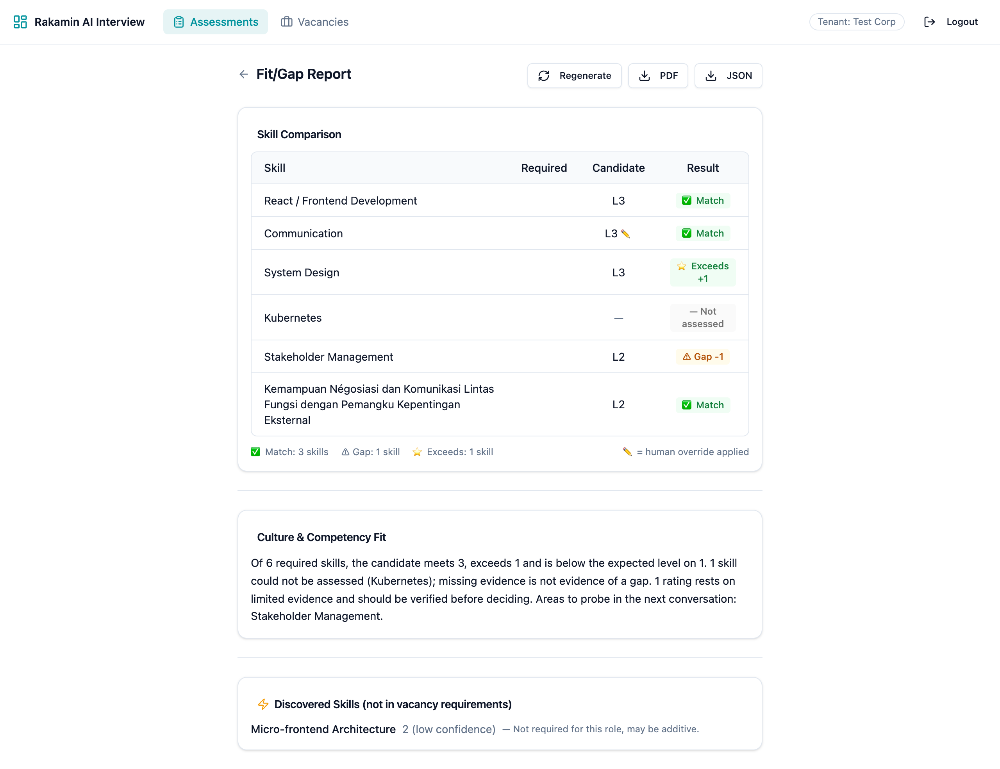
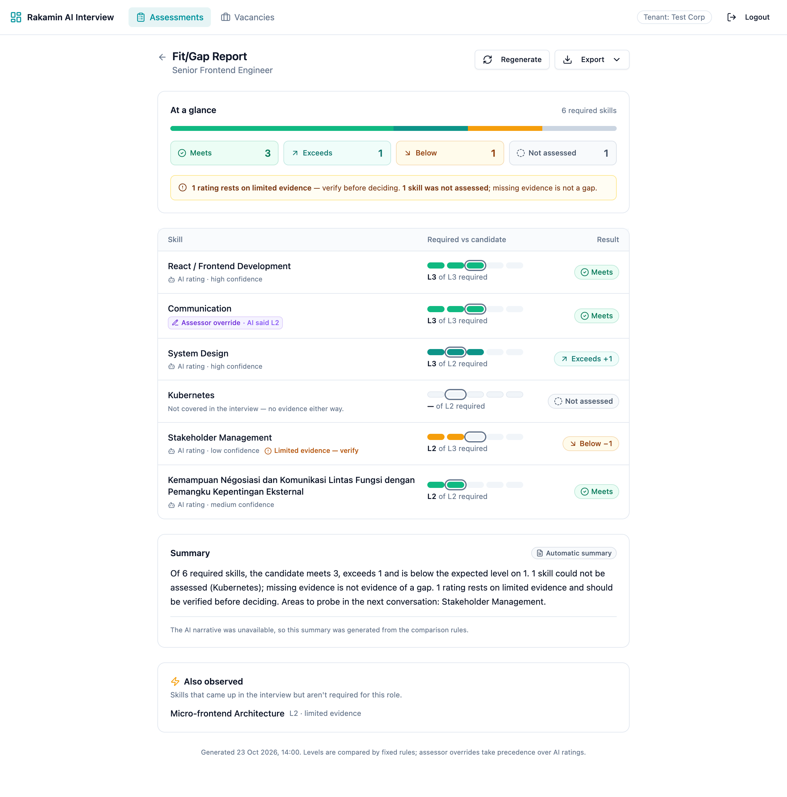
feat/trustworthy-fitgap off main. The work is split into small, reviewable commits, and the failing tests are committed before their fixes.:5173.An assessor configures skills with L1–L5 behavioural anchors. A Gemini voice agent interviews the candidate while a coverage engine tracks which skills it has probed. Gemini Pro then writes a portfolio: a level, a confidence and evidence quotes per skill. The assessor can override any level. Finally, a Fit/Gap report compares the portfolio against a vacancy's expected levels and is exported to PDF. That report is the artefact that leaves the assessor's desk.
Outcome: a hiring manager makes a faster and fairer next-step decision without re-interviewing. That holds only if (1) every number is right, since one visibly wrong row and assessors return to manual interviews; (2) uncertainty is honest, because missing evidence is not negative evidence; and (3) human corrections win and stay visible.
| User | Their day | What they need from this screen |
|---|---|---|
| Assessor | Dozens of candidates across roles, reviewed between meetings | See AI vs. their own corrections; know when a report is outdated; never wait on an infinite spinner |
| Recruiter | Moves candidates through stages and talks to them | A defensible one-glance summary and an export they can attach |
| Hiring manager | Reads on a phone between meetings | Required vs. candidate side by side, what to probe next, explicit caveats |
| Principle | What it means for this slice |
|---|---|
| Data minimisation | Logs carry IDs only; names, notes, evidence and transcript text are filtered; no candidate name is sent to the narrative model |
| Accuracy / correction | Assessor overrides are the correction mechanism: they must persist, win, and be shown |
| Automated decision-making | The narrative asks for "areas to probe", never hire/no-hire, and is labelled as an AI draft to verify |
| Confidentiality | Strict tenant isolation on every endpoint and inside background workers |
| Accountability | Each report records when it was generated, from which inputs (digest), and whether the text is AI or fallback |
Type: D = defective implementation (defined, broken) · M = missing specification (never defined). Every row was reproduced locally; raw evidence is in assessment/evidence/.
| # | Sev | Type | Finding | Impact on the real workflow |
|---|---|---|---|---|
| F0 | P0 | D | The API cannot boot with eager loading: production.rb configures Active Job (never loaded), then Zeitwerk fails on AudioWebsocketMiddleware. Found when CI eager-loaded the app. | Nothing ships. A release blocker independent of features. |
| F1 | P0 | D | API sends expected_level; web reads required_level, so "Required" is blank. The PDF reads the right key, so screen and PDF disagree. tsc passes because the web type mirrors itself. | The comparison screen cannot show what the role requires. |
| F2 | P0 | D | Portfolio.find without a tenant check on fitgap, show, regenerate, export and override. Verified: tenant A exported tenant B's evidence quotes (200) and wrote a cross-tenant report. | One company reads and writes another's candidate data: a UU PDP breach. |
| F3 | P1 | D | Override destroys the report and enqueues a job. The page sees a 404 and enqueues again: 4 jobs for 2 requests. | The report vanishes after a correction; workers race. |
| F4 | P1 | D | is_override is never serialised. After overriding 2→3 the row just says "match". | Human judgement is indistinguishable from AI output. |
| F5 | P1 | M | No report lifecycle. A worker failure means polling every 5 s forever. | Infinite spinner, no retry; the assessor abandons the tool. |
| F6 | P1 | M | A low-confidence (1-probe) rating yields a hard "gap", identical to a high-confidence gap. | The candidate is penalised for a short interview, not a lack of skill. |
| F7 | P1 | M | not_assessed is absent from the UI summary and the fallback narrative ("1 matches, 1 exceeds, 1 gaps"). | Readers assume full coverage. |
| F8 | P1 | D | Portfolio regeneration destroy_alls skills, cascading to overrides, with no transaction. | Human corrections are lost silently; partial portfolios are possible. |
| F9 | P2 | D | Prompt omits competency summaries (PRD-02 says include them), asks for a "hiring recommendation", JSON is unvalidated, and the UI shows culture || overall, hiding one paragraph. | Unverifiable AI text framed as the decision. |
| F10 | P2 | D | Skills match only by id or exact lowercase label. | Spurious "not assessed" rows. |
| F11 | P2 | M | Emoji icons, no error/empty/outdated states, no provenance, no long-text handling; the assessor header overflows phones. | Hard to read where hiring managers read it. |
| F12 | P2 | M | No filter_parameters: names, invite tokens and transcript text can reach logs. | PII in logs. |
| F13 | P3 | D | LLM confidence casing is not normalised before an enum insert; there is a duplicate index. | Avoidable job failures. |
| F14 | P3 | M | No specs, no web test runner, no CI. | Regressions like F1 ship unnoticed. |
main cannot boot in production mode. Either production is not deployed from this tree, or it runs a config that is not in the repo. Confirm before any release.TenantScoped falls back to all when no tenant resolves, and four tables carry no tenant_id. My per-endpoint fix is necessary but not sufficient. The long-term options (tenant_id everywhere, fail-closed scope, Postgres RLS) are a cross-team decision.| A. Patch the seam | B. Stateful, versioned report (chosen) | C. Event-driven recompute + push | |
|---|---|---|---|
| What | Rename the field, add is_override, cap polling | Lifecycle columns, pure comparator, idempotent scheduler, tenant guard, redesigned status-driven screen | Domain events, WebSocket push, per-version history |
| Product impact | Fixes the blank column only | Every row correct and labelled; the report never disappears; failure has a next action; uncertainty is explicit | B plus live updates and history |
| Cost | ~0.5 day | ~3 days incl. tests | ~6–8 days; socket stack is audio-tuned and untested |
| Forecloses | Nothing, but leaves the trust problem | Nothing: digest + status are C's prerequisites | Commits to an event bus before the domain is stable |
| Maintainability | Trivial | One reversible migration, one pure class, small services; cheap to walk back | Many moving parts; hard to walk back |
| Failure modes | Worker failure → spinner forever | Model outage → flagged fallback; crash → failed + retry; duplicate job → no-op; lost job → lease recovery | Message loss and ordering; reconnect storms |
| Fit | Too shallow | Reuses the existing enum, polling and shadcn primitives | Too risky for the deadline |
assessment/03-strategy.md)not_assessed (reason not_probed), never a gapnot_assessed (invalid_rating), no exceptionneeds_verification{} → complete with flagged fallbackfailed + safe message; retries; never stuckvacancy_id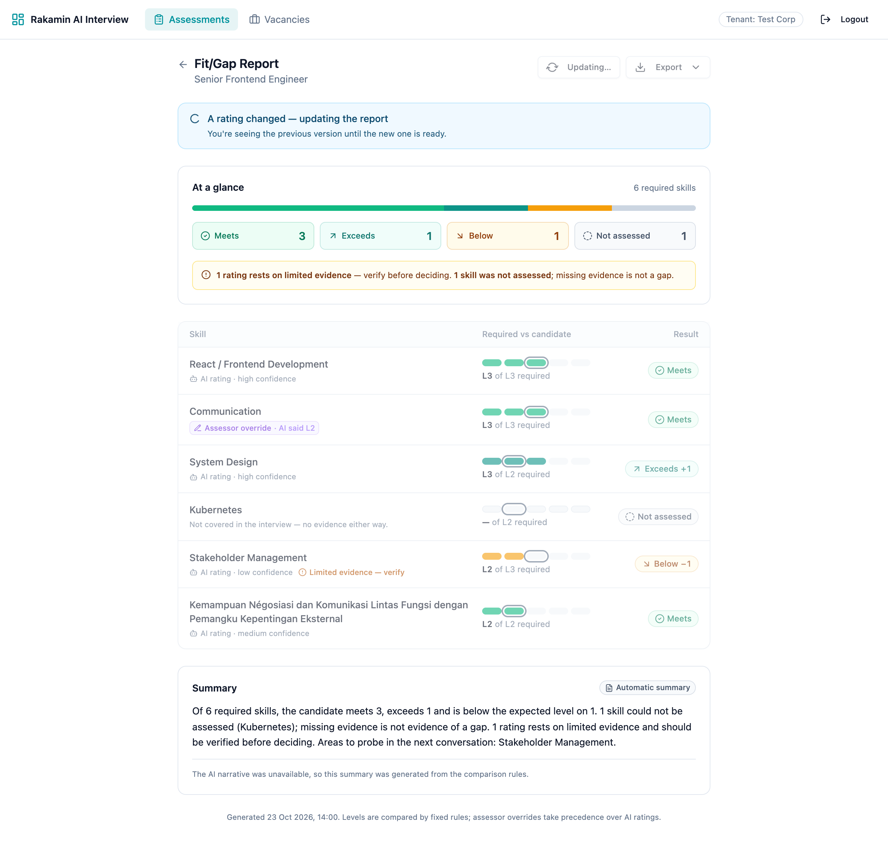
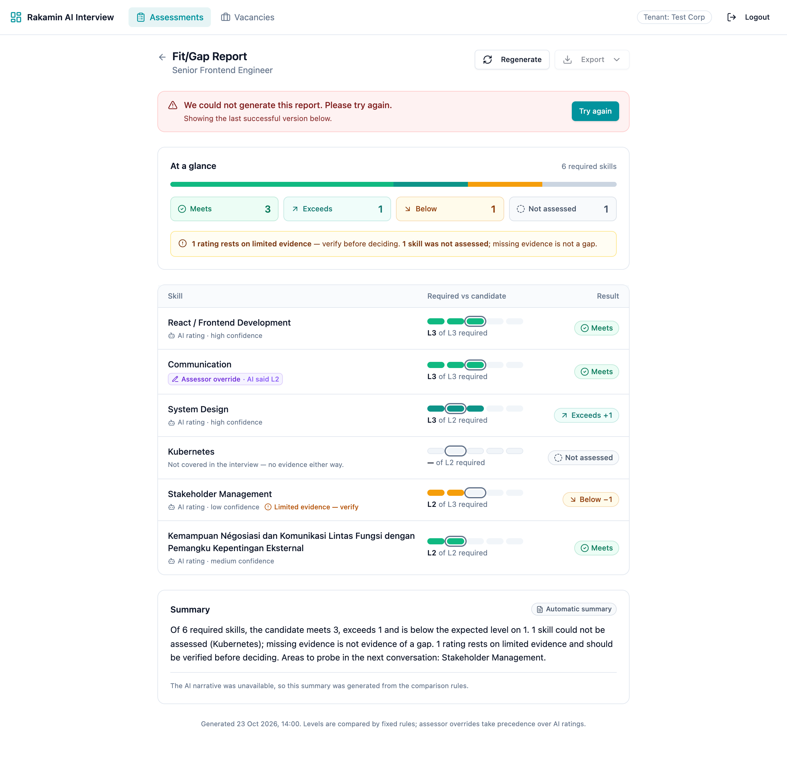
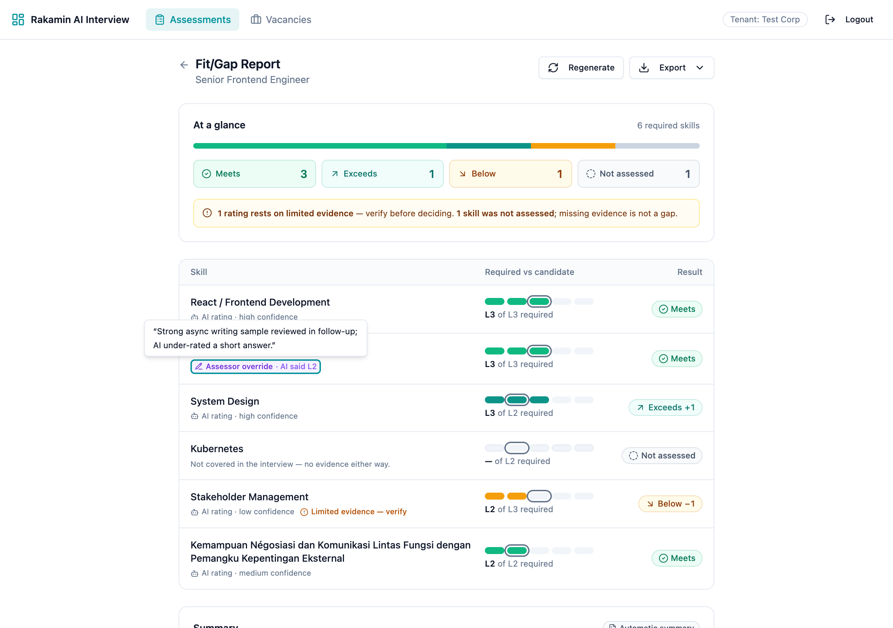
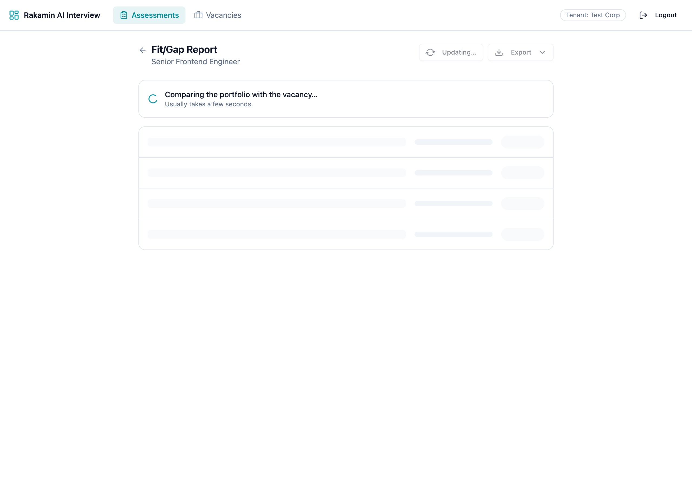
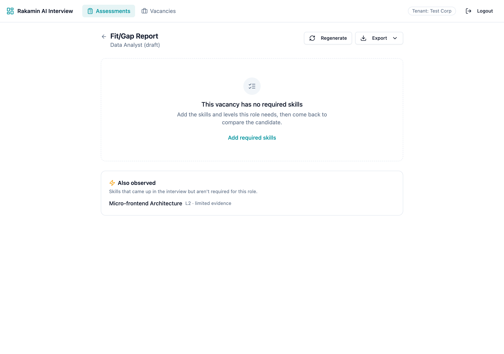
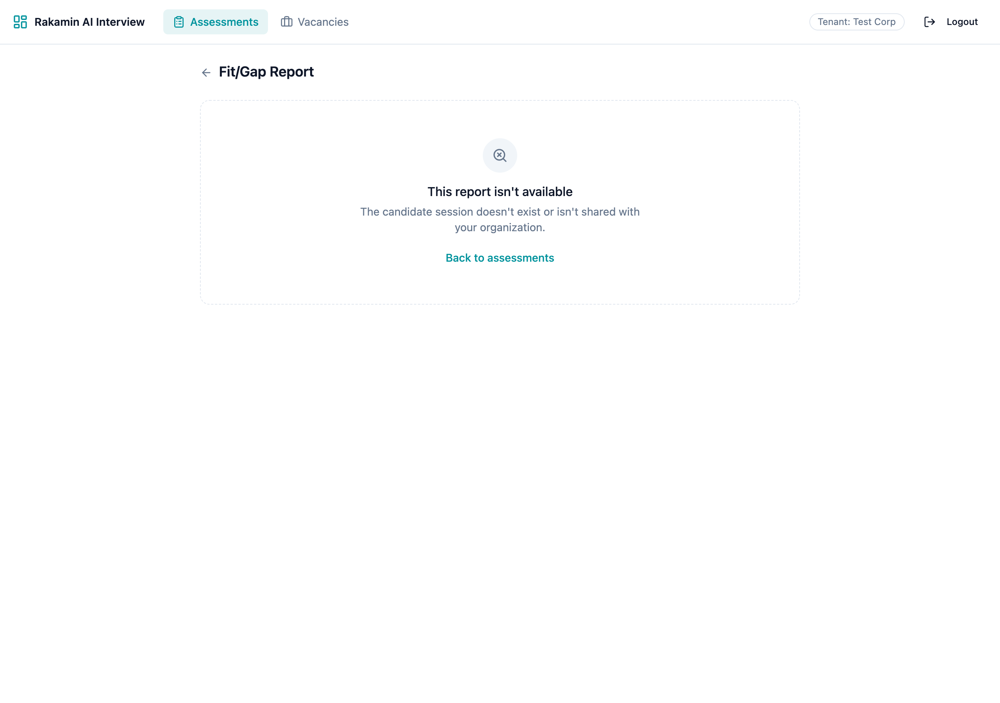
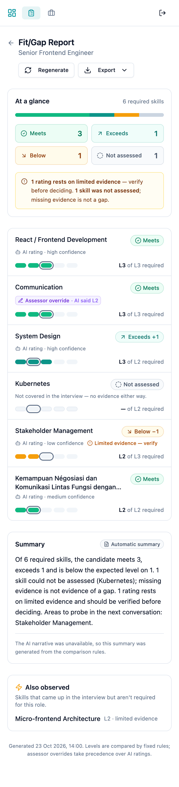
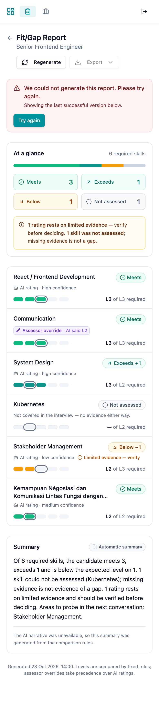
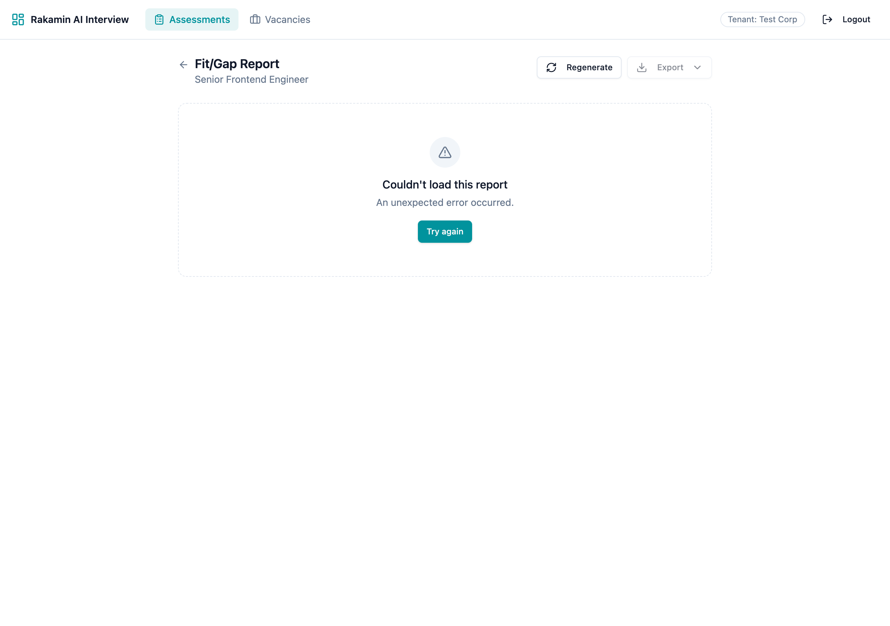
Ready, mobile, tooltip, empty and cross-tenant screenshots come from the live app with fictional data. Generating, stale, failed and load-error states are transient, so they were captured by intercepting the fit/gap API response in the browser using payload shapes from the real API.
| What | Evidence |
|---|---|
| Red before green | Seam bug (web test red on main), tenant isolation (5/5 red), override loss and partial write (4/4 red), production boot (zeitwerk:check fails on main). Each failing test is committed before its fix. |
| Suites | API 106 examples, 0 failures (also with eager loading); web 30 tests + typecheck + build; CI on every PR |
| Contract | The API spec renders the real presenter into fitgap-report.contract.json; every web test renders that file. Renaming a field on either side fails CI. |
| Migration | Spec runs down → inserts a legacy row → up: row backfilled complete, new rows pending, reversible. Also run against the dev DB with existing rows. |
| Browser | Puppeteer against local Chrome: checked every state at 1280 px and 390 px and asserted scrollWidth. This caught a marker that never rendered and the header overflow. |
1b0b539 SEEDED FAULT reintroduces "unprobed skill = gap" (computation) and the required_level read (seam).
→ API: 17 failures (comparator AC2, contract, narrator, engine, request specs). Web: 3 failures, including the original seam reproduction.
6c99dea Revert: the tree is byte-identical to before (git diff empty) and back to 106/106 and 30/30. Both commits stay in the PR history; outputs are in assessment/evidence/seeded-*.txt.
No assertion was weakened. Two specs were corrected when they encoded a wrong assumption, and the stricter behaviour was kept (e.g. "401 without token" became 401 when the tenant is known and a fail-closed 403 when it is not).
1. An assumed timestamp would have re-created the infinite spinner. Generated code used report.updated_at for the lost-job lease and wrote updated_at in the worker's failure path. fit_gap_reports has no timestamps. The worker spec showed the report stuck in generating because the rescue itself raised, which is exactly F5. Fix: an explicit queued_at lease column, plus a spec for the in-lease branch.
2. An "atomic" rewrite that was not atomic. The suggested transaction do … end joined the outer transaction. Even with a savepoint, the error handler's portfolio.update! autosaved the rolled-back skills back in. A partial-write spec kept returning duplicate rows; tracing sql.active_record showed ROLLBACK TO SAVEPOINT followed by an INSERT. Fix: requires_new: true and a reload before marking the portfolio failed.
Also: a factory for an association that does not exist (caught by reading the model), and a Tailwind class silently dropped by tailwind-merge (caught by inspecting computed style in the browser). Full log: assessment/04-ai-verification-log.md.
vacancy_id is validated.application.yml and .env are git-ignored; CI uses dummy values). All names in specs, seeds and screenshots are fictional.sessions.tenant_id); portfolios and reports inherit it.tenant_id on all candidate-data tables + fail-closed scope / RLS.